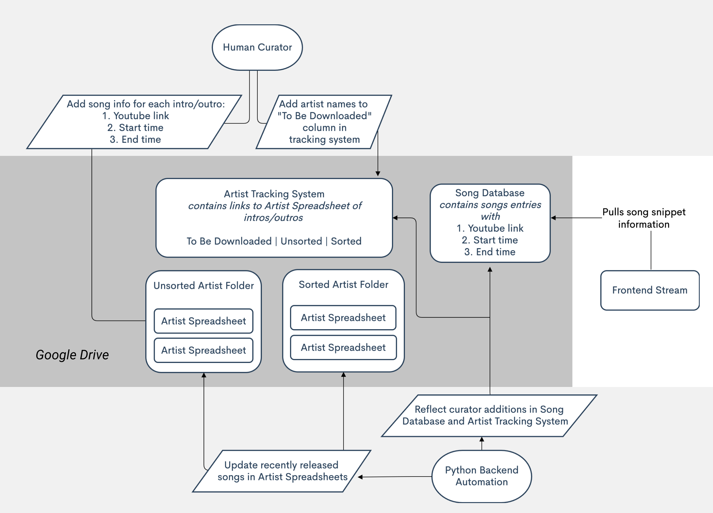

REAL TALK RADIO
For the summer of 2020, I worked on Real Talk Radio under
Ekene Ijeoma with
the Poetic Justice Group at the MIT Media Lab.
Real Talk Radio is a continuous broadcasting system. It contains spoken word song introductions in
Black music from hip hop to jazz as a form of Black thought and knowledge.
These introductions often include personal musings filled with inspiration, insight, and spirituality.
I worked as a music researcher and web developer for this project. I [1] curated over 500 song clips,
[2] coded a broadcasting system to stream and crossfade the clips, and [3] created a Python backend
automation system to update human curator changes and leveraged Google Sheets to create a custom API for the frontend stream.
This project has not been released to the public yet. However, below is a project overview diagram. You can also watch a demo
here.
